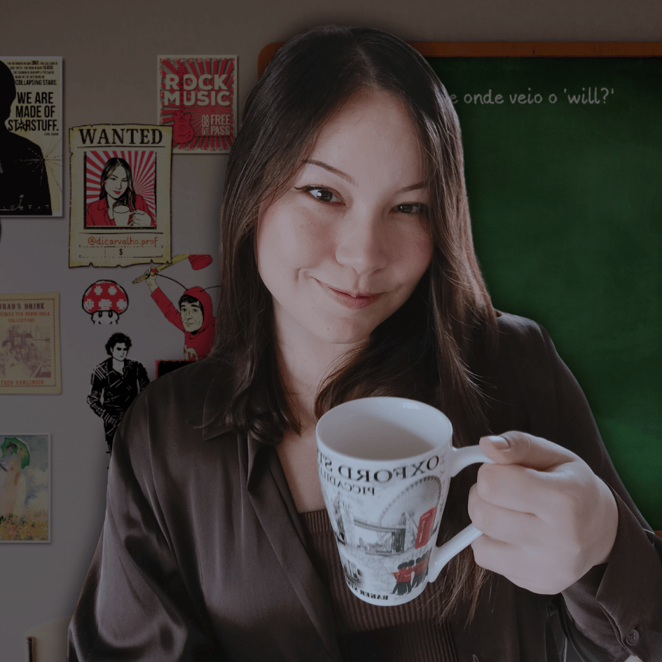

Di Carvalho - Professora de Inglês
Ops, 404
🕯️ Não encontramos a página que você procura.
🎓 Mas já que estamos aqui conheça meu trabalho. 🎓

🕯️ Não encontramos a página que você procura.
🎓 Mas já que estamos aqui conheça meu trabalho. 🎓